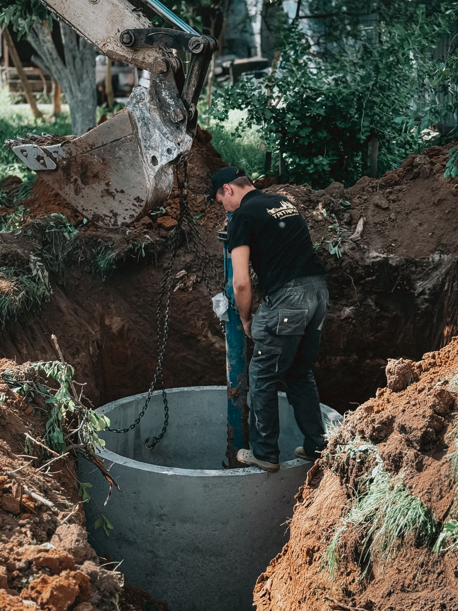
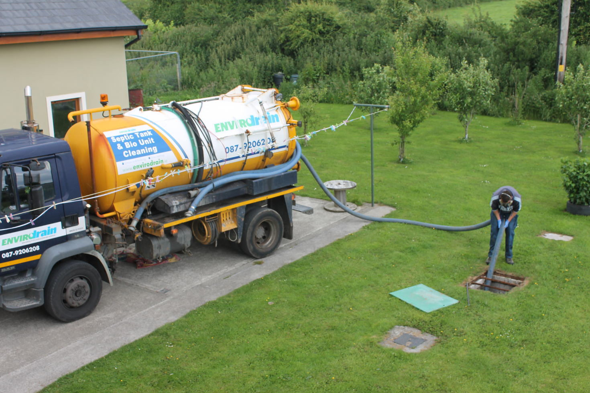
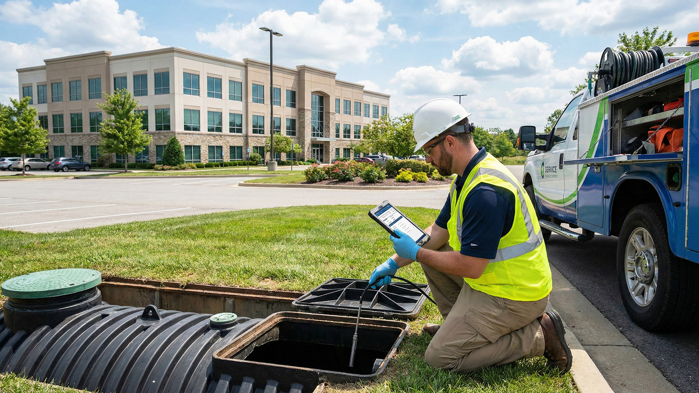
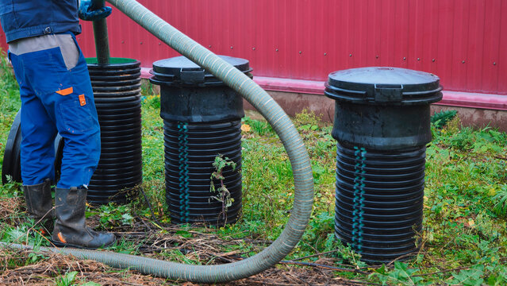

Reliable Pumping
Professional tank pumping helps remove built-up solids and keep your system functioning properly.
Reliable septic tank pumping, inspection, cleaning, and maintenance services designed to keep your wastewater system working properly.

Regular pumping and professional inspections help identify problems early and keep your septic system operating efficiently.
Remove accumulated solids and wastewater before the tank becomes overloaded.
Check the tank and important components for potential maintenance concerns.
Stay ahead of avoidable problems with a practical septic maintenance schedule.
Dependable septic services focused on system performance, preventive care, and long-term reliability.
Professional tank pumping helps remove built-up solids and keep your system functioning properly.
Regular maintenance can help identify concerns before they become costly service problems.
Careful inspections help you understand the condition of your septic system.
A consistent maintenance schedule makes septic system care easier to manage.
From scheduling your appointment to completing the service, ClearFlow Septic focuses on clear communication, dependable workmanship, and respectful property care.
Whether you need routine pumping, an inspection, or help with an unexpected septic issue, our team works to keep your system running safely and reliably.
Explore Our ServicesSkilled professionals providing practical septic pumping, inspection, and maintenance.
Convenient service appointments with clear communication from start to finish.
Careful work practices designed to keep your property clean and orderly.
Straightforward information about your service and septic system condition.
Explore our professional septic pumping, inspection, cleaning, repair, and maintenance services designed to keep your wastewater system working reliably.

System Care
Septic Inspection
System MaintenanceDiscover septic pumping, inspection, repair, cleaning, emergency service, and routine maintenance from ClearFlow Septic.
View ServicesRegular septic pumping and maintenance are important parts of caring for your wastewater system and avoiding preventable service problems.
Whether you need routine pumping, an inspection, cleaning, or help with an existing concern, ClearFlow Septic provides practical service for your next step.